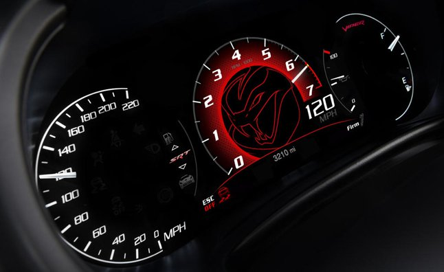
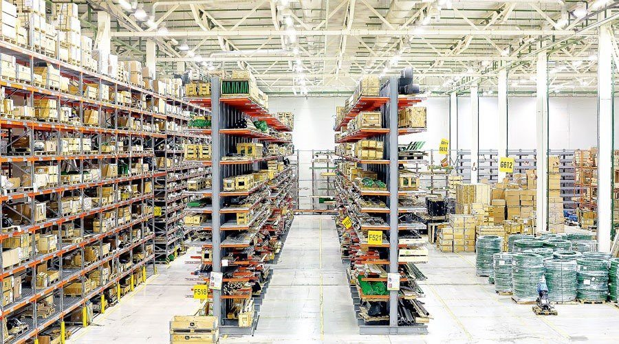
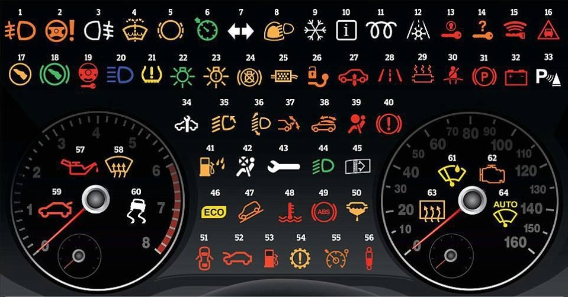

Poprawianie liczników

Część po recyklingu

Wynajdowanie usterek
Dla wygody klientów nasze autocentrum techniczne świadczy pełen zakres usług ubezpieczeniowych. Możesz ubiegać się o CASCO, OSAGO, dobrowolne ubezpieczenie OC, a także o zieloną kartę. Z nami możesz ubezpieczyć swój samochód opłacalnie, solidnie, wygodnie, ponieważ współpracujemy tylko ze sprawdzonymi towarzystwami ubezpieczeniowymi, które zawsze i dokładnie dokonują płatności za ubezpieczone zdarzenia. Kupując polisy OSAGO i CASCO masz pewność czystości i rzetelności transakcji Naszym celem jest uproszczenie, aby proces ubezpieczenia i późniejszej interakcji z ubezpieczycielem był dla Ciebie jak najwygodniejszy. W tym celu podchodzimy indywidualnie do każdego ubezpieczającego. Wybór optymalnego towarzystwa ubezpieczeniowego i kalkulacja kosztu polisy Wystawianie polis OSAGO i CASCO codziennie od 9.00 do 18.00.